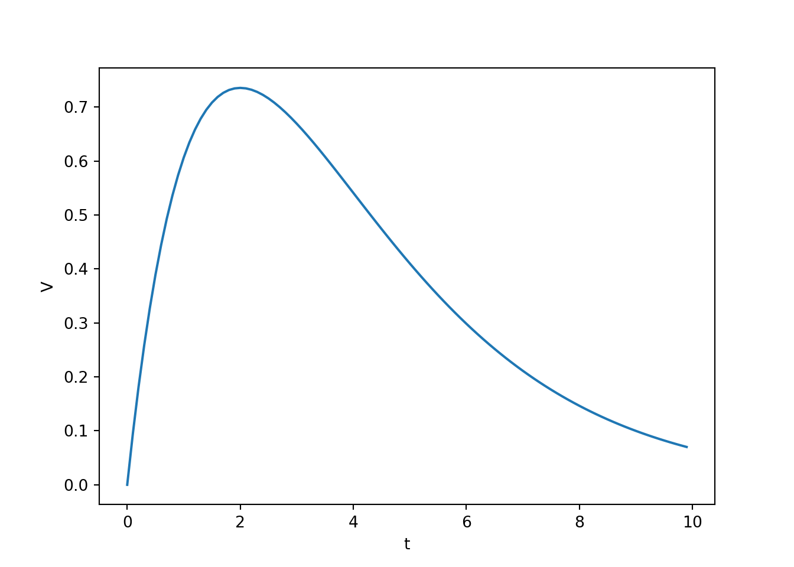
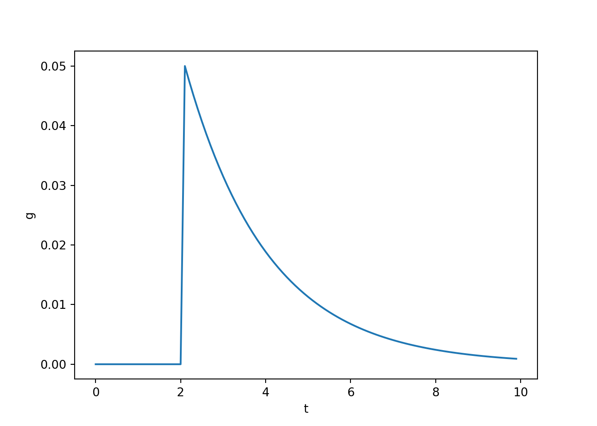
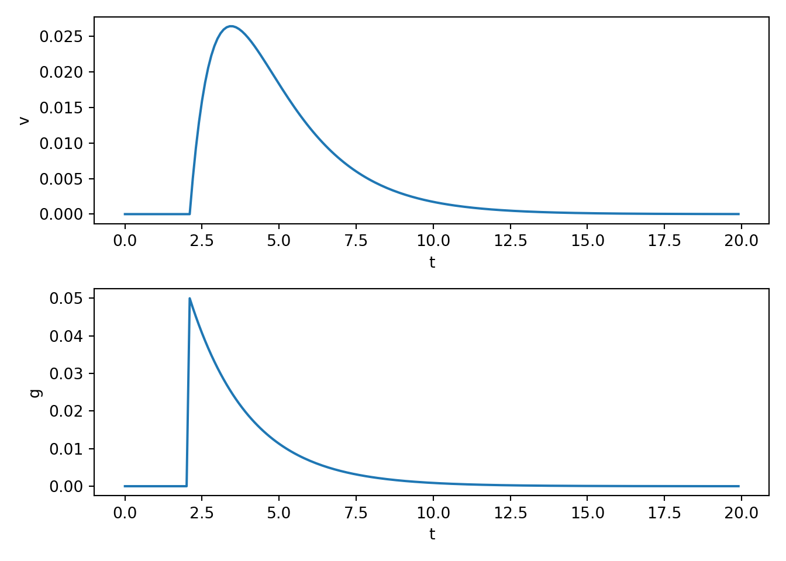
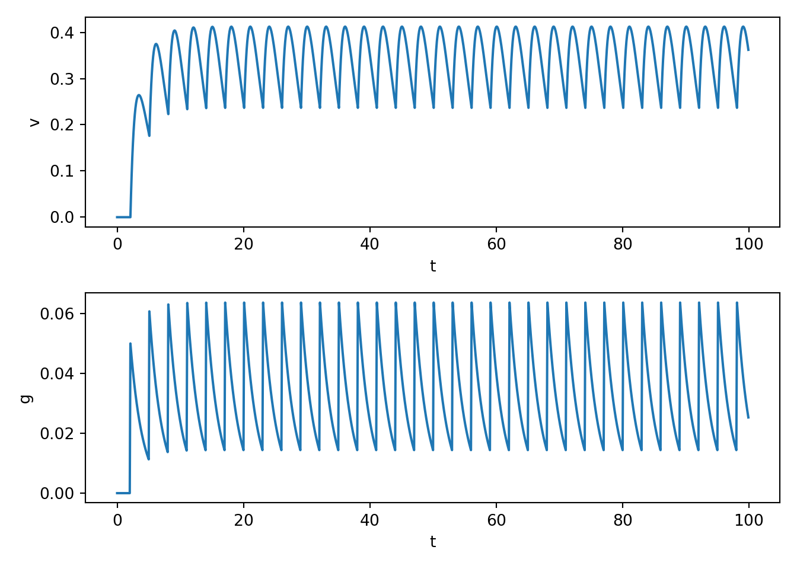
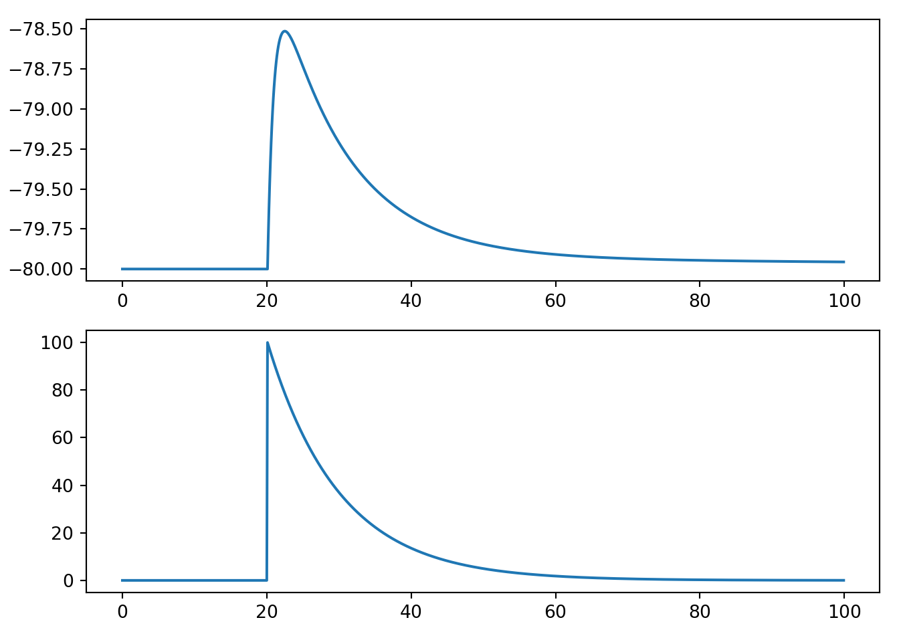
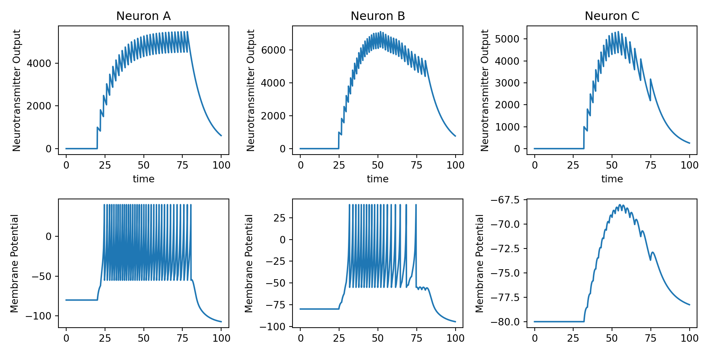

8 Neurotransmitter release
8.1 Synaptics responses
- Action potentials lead to neurotransmitter release which float across the synaptic cleft and bind to postsynaptic receptors on a receiving neuron, causing excitatory or inhibitory postsynaptic potentials (EPSP or IPSP) in the receiving neuron. The timecourse of the PSP on the receiving membrane potential is commonly modelled as follows.
\[ \Delta V_{\text{PSP}}(t) = A t e^{\frac{-t}{t_{\text{peak}}}} \]
\(A\) is amplitude parameter
\(t_{\text{peak}}\) is the time at which \(\Delta V_{\text{PSP}}(t)\) reaches its max value.
In neuroscience, this function is often called the alpha function.
import numpy as np
import matplotlib.pyplot as plt
tau = 0.1
T = 10
A = 1
t_peak = 2
t = np.arange(0, T, tau)
n = t.shape[0]
v_psp= A * t * np.exp(-t/t_peak)
fig, ax = plt.subplots(1, 1, squeeze=False)
ax[0,0].plot(t, v_psp)
ax[0,0].set_xlabel('t')
ax[0,0].set_ylabel('V')
plt.show()
8.2 Spikes as a change in conductance
- This PSP timecourse can also be obtained by modelling the effect of an action potential on the ion conductivity of a receiving membrane potential as follows.
\[ \frac{d}{dt}g(t) = \big(-g(t) + A_{\text{psp}} \delta(t_{\text{spike}}) \big) / t_{\text{psp}} \]
\(g(t)\) is the conductance of the receiving membrane patch.
\(A_{\text{psp}}\) is an amplitude parameter that determines how much each individual spike influences the conductance of the receiving neuron.
\(t_{\text{psp}}\) is a time constant that determines how quickly the influence of spike on conductance fades away.
\(t_{\text{spike}}\) is the time of the next spike and \(\delta()\) is a delta function – it is one wherever \(t = t_{\text{spike}}\) and zero everwhere else.
g = np.zeros(n)
spike = np.zeros(n)
spike[20] = 1
for i in range(n):
dgdt = (-g[i-1] + A * spike[i-1]) / t_peak
dt = t[i] - t[i-1]
g[i] = g[i-1] + dgdt * dt
fig, ax = plt.subplots(1, 1, squeeze=False)
ax[0,0].plot(t, g)
ax[0,0].set_xlabel('t')
ax[0,0].set_ylabel('g')
plt.show()
- Notice that this model produces an instantaneous change in conductance. Therefore, this isn’t a particularly realistic model of conductance changes, but as we see next, it leads to PSPs that look pretty good.
8.3 Coupling conductance to PSP
- We couple the above model of conductance change to a simple model of membrane potential with the following simple differential equations.
\[ \frac{d}{dt}v(t) = \big( g(t) (v(t) - E) - g_{\text{leak}} v(t) \big) / C \\ \frac{d}{dt}g(t) = \big( -g(t) + A_{\text{psp}} \delta(t_{\text{spike}}) \big) / t_{\text{psp}} \]
tau = 0.1
T = 20
A = 1
t_peak = 2
t = np.arange(0, T, tau)
n = t.shape[0]
v = np.zeros(n)
g = np.zeros(n)
spike = np.zeros(n)
spike[20] = 1
E = -1
g_leak = 1
C=1
for i in range(n):
dvdt = (g[i-1]*(v[i-1]-E) - g_leak * v[i-1]) / C
dgdt = (-g[i-1] + A * spike[i-1]) / t_peak
dt = t[i] - t[i-1]
v[i] = v[i-1] + dvdt * dt
g[i] = g[i-1] + dgdt * dt
fig, ax = plt.subplots(2, 1, squeeze=False)
ax[0,0].plot(t, v)
ax[0,0].set_xlabel('t')
ax[0,0].set_ylabel('v')
ax[1,0].plot(t, g)
ax[1,0].set_xlabel('t')
ax[1,0].set_ylabel('g')
plt.tight_layout()
plt.show()
8.4 PSPs superimpose
- You can play around with the spike train frequency and number etc in the above to see how PSPs superimpose with multiple spikes. E.g., see below.
tau = 0.1
T = 100
A = 1
t_peak = 2
t = np.arange(0, T, tau)
n = t.shape[0]
v = np.zeros(n)
g = np.zeros(n)
spike = np.zeros(n)
spike[20::30] = 1
E = -10
g_leak = 1
C=1
for i in range(n):
dvdt = (g[i-1]*(v[i-1]-E) - g_leak * v[i-1]) / C
dgdt = (-g[i-1] + A * spike[i-1]) / t_peak
dt = t[i] - t[i-1]
v[i] = v[i-1] + dvdt * dt
g[i] = g[i-1] + dgdt * dt
fig, ax = plt.subplots(2, 1, squeeze=False)
ax[0,0].plot(t, v)
ax[0,0].set_xlabel('t')
ax[0,0].set_ylabel('v')
ax[1,0].plot(t, g)
ax[1,0].set_xlabel('t')
ax[1,0].set_ylabel('g')
plt.tight_layout()
plt.show()
- Note that you are not seeing action potentials from the above code. In fact, the above code doesn’t even have a mechanism to generate an action potential even if \(v\) became very depolarised. Rather, we are seeing PSPs. In practice, enough spikes will cuase many superimposing PSPs and that will cause the receiving cell to fire. We turn to that next.
8.5 PSP model in the Izhikevich neuron
We can also easily embed this sort of modelling of PSPs into other neuron types. To build moderate to large networks, we will end up relying on Izhikevich neurons, so we look at that next.
The differential equations for an Izhikevich neuron is given by the following:
\[ \begin{align} C \frac{d}{dt} v(t) &= k(v(t) - v_r) (v(t) - v_t) - u(t) + I(t) \\ \frac{d}{dt} u(t) &= a \big(b(v(t) - v_r) - u(t)\big) \\ \text{ if} &\quad v(t) > v_{\text{peak}} \\ \text{ then} &\quad v(t) \leftarrow c, \quad u(t) \leftarrow u(t) + d \end{align} \]
Check back over previous lecture notes for a description of what each parameter does.
The trickiest part is thinking about where to place \(g(t)\). The form of the Izhikevich neuron looks different enough from the leaky conductance model from above that it may isn’t immediately obvious what we should do.
The key is to remember that since the \(I\) term is the input current, and a change in conductance effectively leads to changes in input currents, the \(g\) term is closely related to \(I\). Here, we take the simple approach of simply replacing \(I\) with the \(g\) term from an afferent neuron.
An intuitive way of justifying this decision is to remember that we use \(I(t)\) to model any external current input, and this is precisely what a spike is from the perspective of the receiving cell.
import numpy as np
import matplotlib.pyplot as plt
tau = 0.1
T = 100
t = np.arange(0, T, tau)
n = t.shape[0]
C = 50
vr = -80
vt = -25
vpeak = 40
k = 1
a = 0.01
b = -20
c = -55
d = 150
spike = np.zeros(n)
spike[200] = 100
g = np.zeros(n)
psp_amp = 100
psp_decay = 10
v = np.zeros(n)
u = np.zeros(n)
v[0] = vr
for i in range(1, n):
# model the current input from some afferent neuron
dgdt = (-g[i - 1] + psp_amp * spike[i - 1]) / psp_decay
dvdt = (k * (v[i - 1] - vr) * (v[i - 1] - vt) - u[i - 1] + g[i-1]) / C
dudt = a * (b * (v[i - 1] - vr) - u[i - 1])
dt = t[i] - t[i - 1]
v[i] = v[i - 1] + dvdt * dt
u[i] = u[i - 1] + dudt * dt
g[i] = g[i - 1] + dgdt * dt
if v[i] >= vpeak:
v[i - 1] = vpeak
v[i] = c
u[i] = u[i] + d
fig, ax = plt.subplots(2, 1, squeeze=False)
ax[0, 0].plot(t, v)
ax[1, 0].plot(t, g)
plt.tight_layout()
plt.show()
8.6 Chaining neurons together
We now build a simple spiking neural network that chains three excitatory neurons together in a straightforward manner: \(A \rightarrow B \rightarrow C\)
The basic logic that we use here is pretty simple. There will be an external input (square pulse thing like we have used lots so far in this unit) that feeds into neuron \(A\), and then the neurotransmitter release assocaited with each neurons action potentials will induce EPSPs in the neuron that they project to.
import numpy as np
import matplotlib.pyplot as plt
tau = 0.1
T = 100
t = np.arange(0, T, tau)
n = t.shape[0]
C = 50
vr = -80
vt = -25
vpeak = 40
k = 1
a = 0.01
b = -20
c = -55
d = 150
psp_amp = 1e5
psp_decay = 10
g = np.zeros(n)
spike = np.zeros(n)
spike[200:800:20] = 1
v1 = np.zeros(n)
u1 = np.zeros(n)
g1 = np.zeros(n)
spike1 = np.zeros(n)
v1[0] = vr
v2 = np.zeros(n)
u2 = np.zeros(n)
g2 = np.zeros(n)
spike2 = np.zeros(n)
v2[0] = vr
v3 = np.zeros(n)
u3 = np.zeros(n)
g3 = np.zeros(n)
spike3 = np.zeros(n)
v3[0] = vr
w_01 = 1.0
w_12 = 0.5
w_23 = 0.1
for i in range(1, n):
dt = t[i] - t[i - 1]
# external input
dgdt = (-g[i - 1] + psp_amp * spike[i - 1]) / psp_decay
g[i] = g[i - 1] + dgdt * dt
# neuron 1
dvdt1 = (k * (v1[i - 1] - vr) * (v1[i - 1] - vt) - u1[i - 1] + w_01 * g[i-1]) / C
dudt1 = a * (b * (v1[i - 1] - vr) - u1[i - 1])
dgdt1 = (-g1[i - 1] + psp_amp * spike1[i - 1]) / psp_decay
v1[i] = v1[i - 1] + dvdt1 * dt
u1[i] = u1[i - 1] + dudt1 * dt
g1[i] = g1[i - 1] + dgdt1 * dt
if v1[i] >= vpeak:
v1[i - 1] = vpeak
v1[i] = c
u1[i] = u1[i] + d
spike1[i] = 1
# neuron 2
dvdt2 = (k * (v2[i - 1] - vr) * (v2[i - 1] - vt) - u2[i - 1] + w_12 * g1[i-1]) / C
dudt2 = a * (b * (v2[i - 1] - vr) - u2[i - 1])
dgdt2 = (-g2[i - 1] + psp_amp * spike2[i - 1]) / psp_decay
v2[i] = v2[i - 1] + dvdt2 * dt
u2[i] = u2[i - 1] + dudt2 * dt
g2[i] = g2[i - 1] + dgdt2 * dt
if v2[i] >= vpeak:
v2[i - 1] = vpeak
v2[i] = c
u2[i] = u2[i] + d
spike2[i] = 1
# neuron 3
dvdt3 = (k * (v3[i - 1] - vr) * (v3[i - 1] - vt) - u3[i - 1] + w_23 * g2[i-1]) / C
dudt3 = a * (b * (v3[i - 1] - vr) - u3[i - 1])
dgdt3 = (-g3[i - 1] + psp_amp * spike3[i - 1]) / psp_decay
v3[i] = v3[i - 1] + dvdt3 * dt
u3[i] = u3[i - 1] + dudt3 * dt
g3[i] = g3[i - 1] + dgdt3 * dt
if v3[i] >= vpeak:
v3[i - 1] = vpeak
v3[i] = c
u3[i] = u3[i] + d
spike3[i] = 1
fig, ax = plt.subplots(2, 3, squeeze=False, figsize=(10, 5))
ax[0, 0].plot(t, g)
ax[1, 0].plot(t, v1)
ax[0, 1].plot(t, g1)
ax[1, 1].plot(t, v2)
ax[0, 2].plot(t, g2)
ax[1, 2].plot(t, v3)
ax[0, 0].set_title('Neuron A')
ax[0, 1].set_title('Neuron B')
ax[0, 2].set_title('Neuron C')
ax[0, 0].set_xlabel('time')
ax[0, 1].set_xlabel('time')
ax[0, 2].set_xlabel('time')
ax[1, 0].set_ylabel('Membrane Potential')
ax[1, 1].set_ylabel('Membrane Potential')
ax[1, 2].set_ylabel('Membrane Potential')
ax[0, 0].set_ylabel('Neurotransmitter Output')
ax[0, 1].set_ylabel('Neurotransmitter Output')
ax[0, 2].set_ylabel('Neurotransmitter Output')
plt.tight_layout()
plt.show()